第 5C 批：道路連續畫面、六車競爭與五章錦標賽
道路前後各 15 段／568 影格，使用相同姿態的正式渲染器重播；這些是攝影機與遮擋測試，不能當作真實完賽證據。下方另附使用一般操作完成五章的實際第五章賽事。影片保持完整尺寸與全部影格，採 VP9 CQ18 匯出；遊戲本身畫質未調降。
完整驗收文件 · 影片驗證清單 · 修改前逐格位置／相機 · 修改後逐格位置／相機
修改前：main 8314ab5修改後：第 5C 批
第五章 1012.25：近端路段單格定位（需配合連續影片）
實際第五章六車賽事
前四章實際完賽後繼承起跑順位；普通輸入、120Hz 物理、20Hz 控制，影片 12fps。包含一次第 5 秒、0.2 秒煞車失誤，之後恢復正常控制，以驗證 AI 超越與玩家追趕。這是明示的操作情境，不代表每場正常駕駛都必定被反超。逐格六車位置、名次與超車事件
七守護者原創程序車款
車殼不同，碰撞寬度與操控性能相同。車款資料
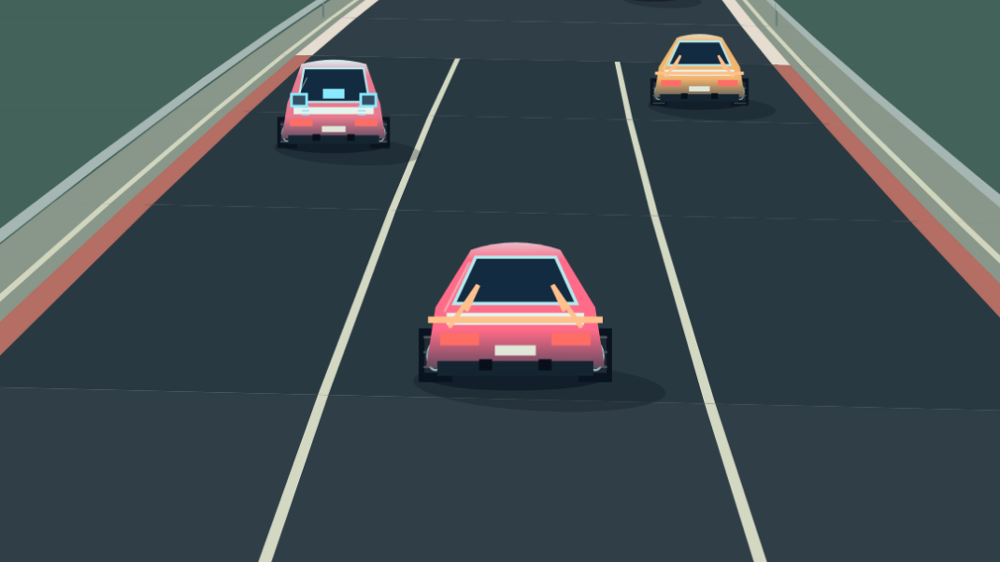
烈焰 GT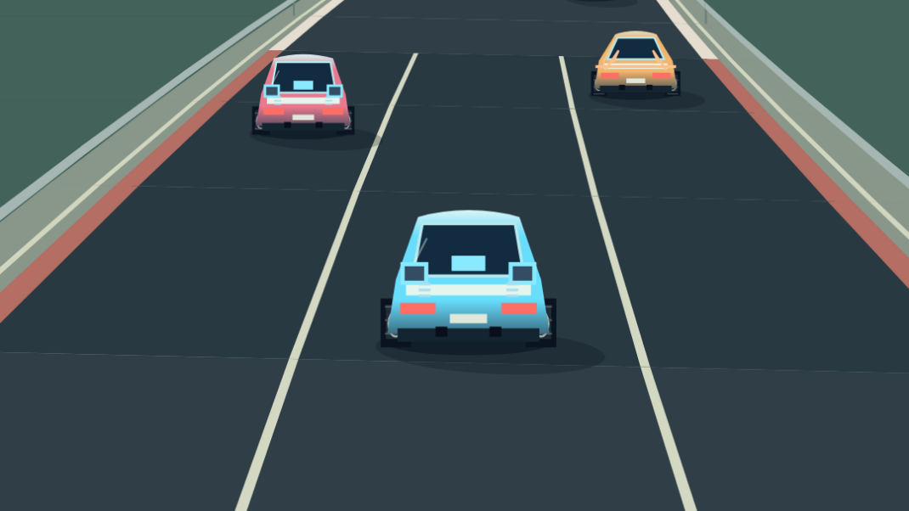
共振機甲鋼鐵越野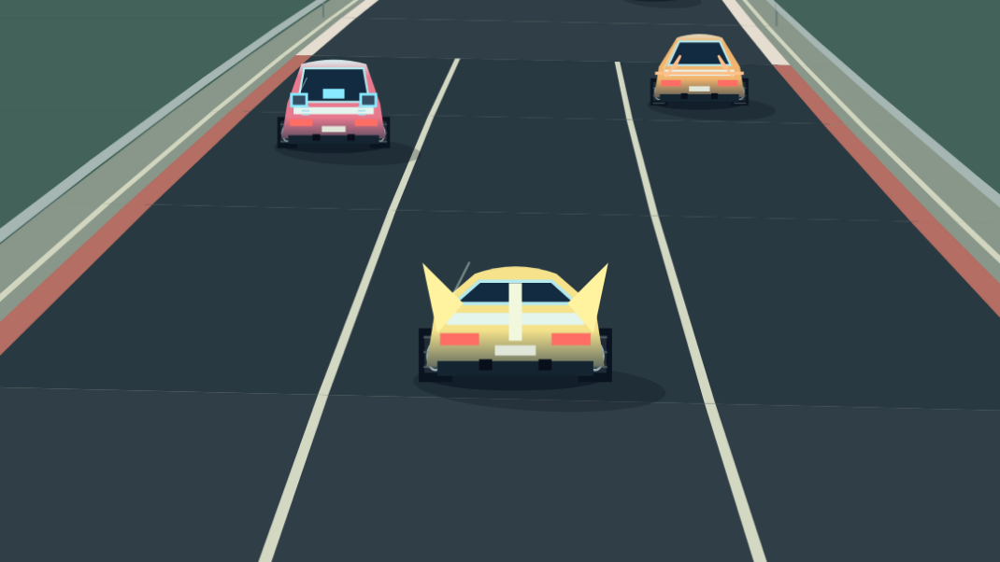
光子疾影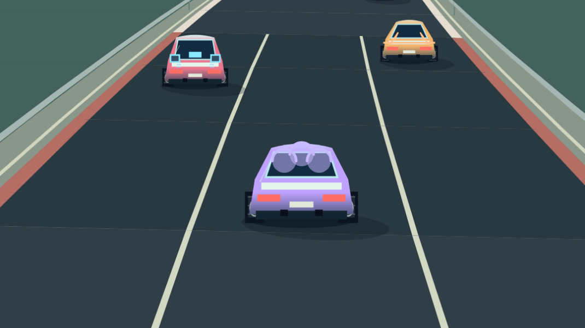
三重泡影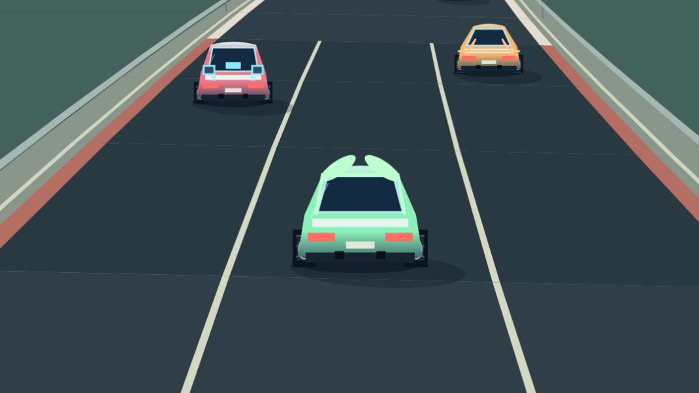
翠葉巡遊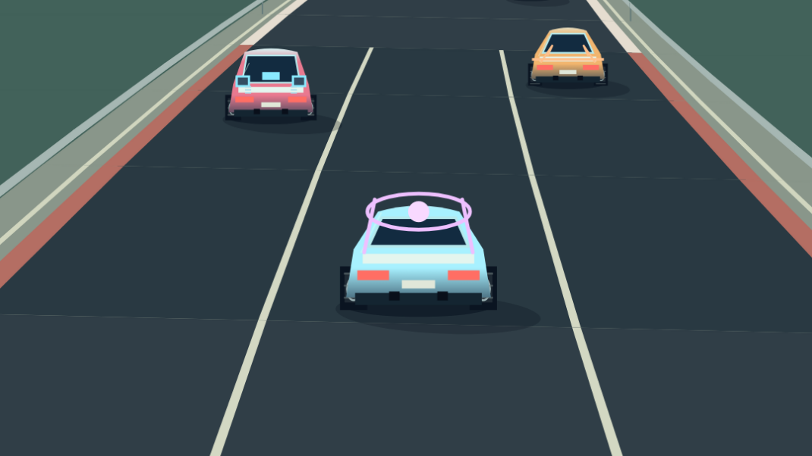
先知星環五章實際結算（繁中／日文與三種基礎難度）
230 次真實通關與兩次錦標賽失敗驗證；手機／桌面視窗依原矩陣輪替，皆為 Cloud Chromium，非實體裝置。
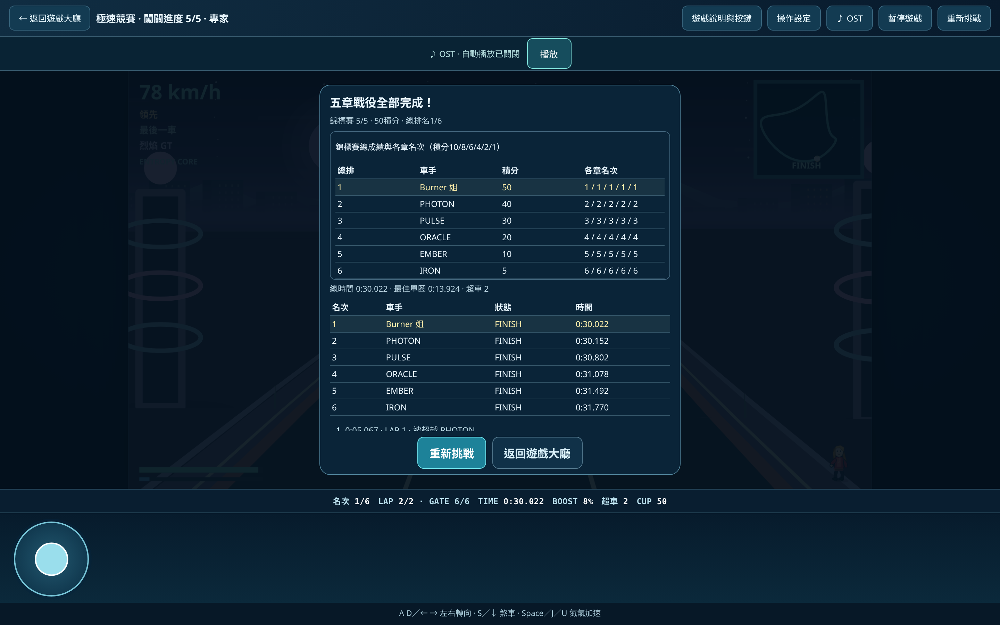
zh · normal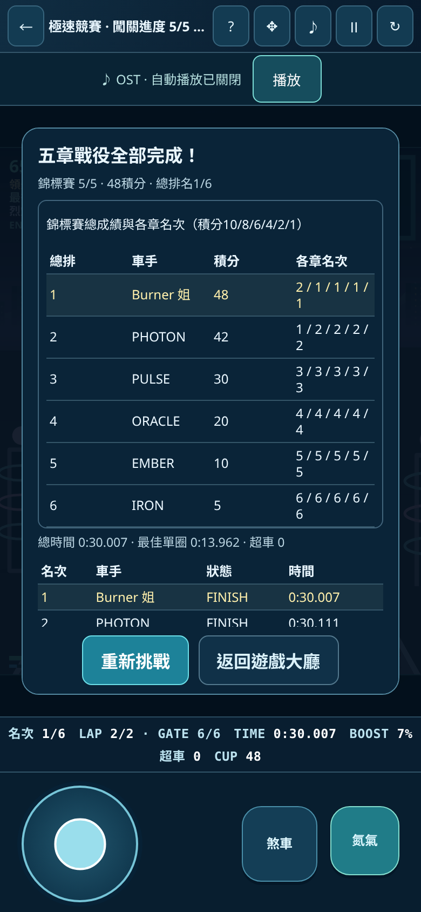
zh · hard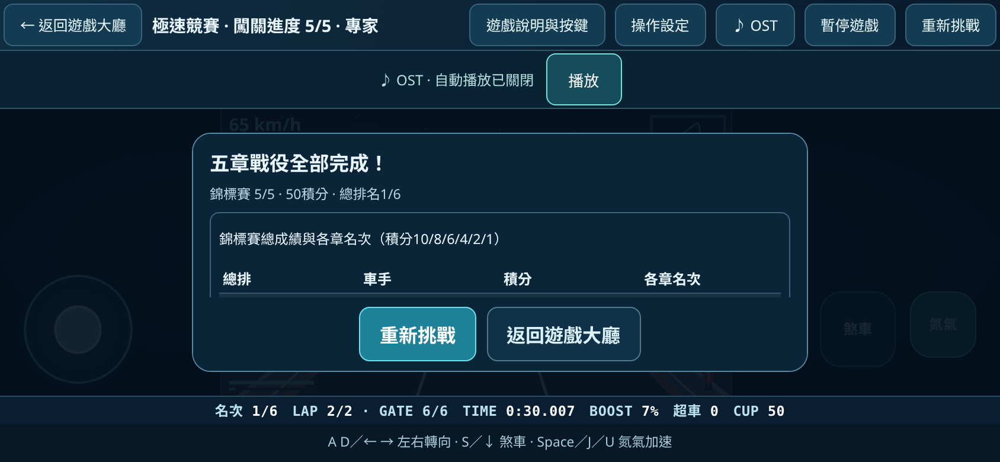
zh · expert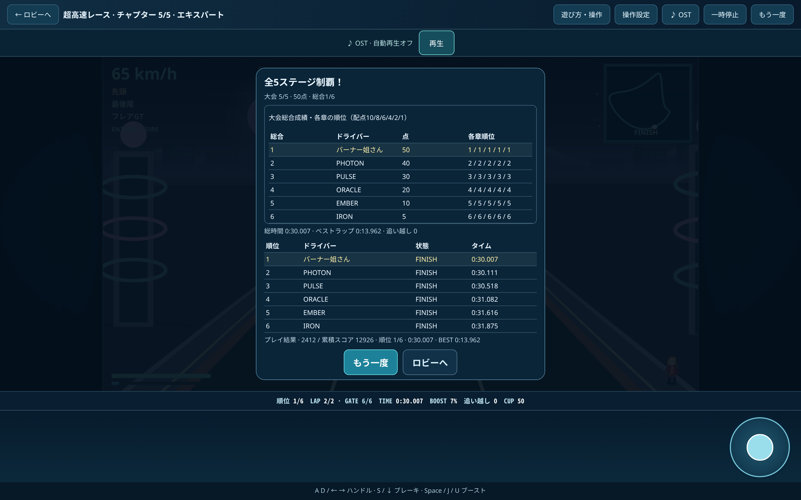
ja · normal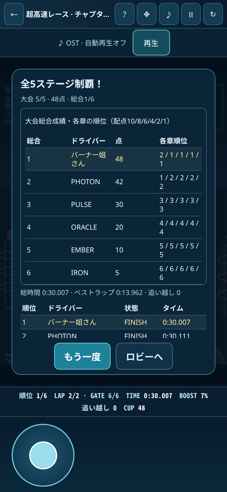
ja · hard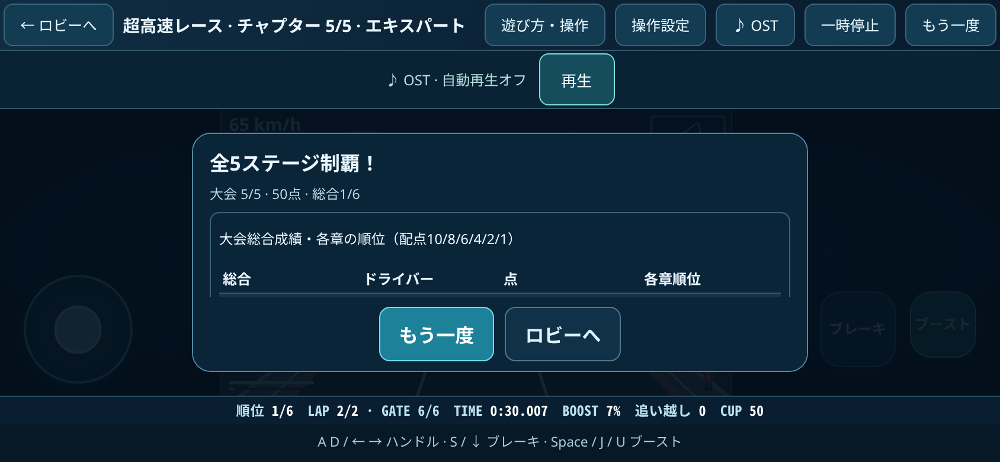
ja · expert